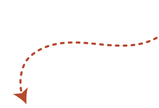
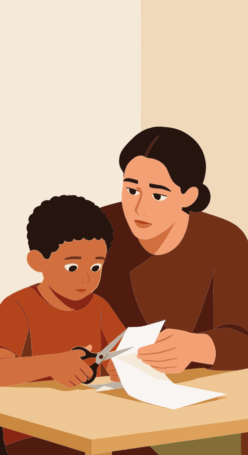
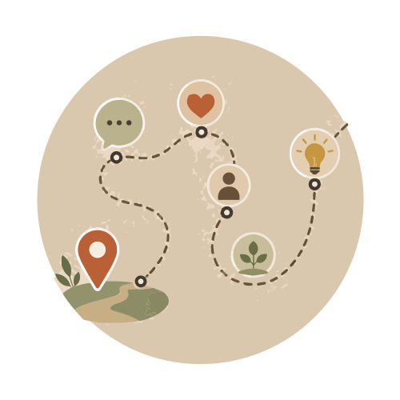
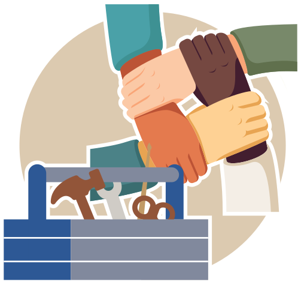
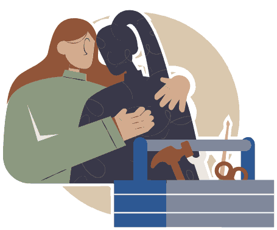

Continuar de onde parou?
Deseja continuar de onde parou?

Reinventando a invenção para viver intensamente o poder local
“Não há liberdade exceto no vínculo que nos ajuda a lutar contra o que nos divide.”
Franca Ongaro BasagliaO último curso sobre atenção à crise organizado pelos entes governamentais em âmbito federal, na modalidade EaD, foi realizado em 2014. O curso Crise e Urgência em Saúde Mental, ofertado pela UNA-SUS e pela Universidade Federal de Santa Catarina, é uma estruturação bem elaborada de um conhecimento calcado e produzido pelos diversos atores da Reforma Psiquiátrica brasileira, o qual oferece ferramentas para o cuidado à crise a partir dos serviços de saúde. Passados dez anos, o Ministério da Saúde, em conjunto com a Fiocruz Brasília, propõe um novo curso capaz de enfrentar este que é considerado um ponto nevrálgico do processo: o cuidado realizado em situações de crise. Processo esse sempre em construção, entre impasses, negociações e disputas em todos os âmbitos.
Para pensar em um novo curso, foi preciso indagar, então, o que aconteceu em 10 anos. Que rede de saúde temos agora, no tempo presente, em qual contexto sócio-histórico específico, e quais avanços e inovações técnico-políticas foram possíveis. Tomar o que já foi construído de saber sobre crise na rede de saúde mental em território brasileiro para questionar o que é preciso fazer diferente e o que é preciso ainda sustentar e reforçar.
É digno de nota que o último “Saúde Mental em Dados”, edição nº 13, foi lançado em fevereiro de 2025, também 10 anos após a última publicação, o “Saúde Mental em Dados”, edição nº 12. Hoje, ainda que após recente retrocesso, contamos com o maior número de Centros de Atenção Psicossocial (CAPS) e de Serviços Residenciais Terapêuticos (SRT), maior número de cadastrados no “Programa de Volta para Casa”, menor número de leitos em hospitais psiquiátricos, e um recém-iniciado processo de desinstitucionalização dos egressos de hospitais de custódia e tratamento psiquiátrico (HCTP). Além disso, temos o contínuo aprofundamento dos debates sobre o impacto do racismo e de nossa herança colonial, e a consideração dos saberes tradicionais e diálogos interculturais.
Como devemos responder às questões do nosso tempo? E de que crises falamos hoje?
O futuro determina o passado (Furtado, 2020), exigindo-nos uma postura atenta sobre aquilo que herdamos, para que o presente esteja à altura desse desafio. A consideração do espaço e tempo na questão da loucura e a resposta que damos à crise tornam-se prementes. Tomemos o clássico de Dell’Acqua e Mezzina (1991, p. 53):
É seguramente difícil uma definição única da crise em psiquiatria. Qualquer esquema para defini-la deve, em todo caso, considerar a organização psiquiátrica existente naquela área e naquele momento histórico particular. Existe, de fato, um valor-limite relativo a estas duas contingências, além do qual os problemas emocionais, psicológicos, de relação, sociais e os fatos da vida assumem as características da crise e se tornam de interesse psiquiátrico específico.
Ora, se a crise depende, pelo menos, da organização sanitária adjacente, é preciso pensar um curso que intente partir das diversas especificidades do território e do contexto sociopolítico. Mas como fazer a articulação entre o que é comum e o que é singular em relação à saúde mental e às situações de crise considerando as diferenças no território?
Clique na caixa e confira a resposta.
Responder ao segredo da esfinge demanda, primeiramente, que não tenhamos resposta pré-pronta. As situações de crise costumam justamente trazer uma pergunta – o que aconteceu? –, e, para responder, a cada recorrência, é preciso pensar nas condições gerais de seu surgimento e demanda, que mudam bastante conforme a pessoa, sua comunidade, seu território e os serviços disponíveis ou não. Então, antes de tudo, serve-nos a primordial ação enquanto campo da saúde mental: acolher, mesmo ainda não entendendo, abertos ao novo.

Mesmo sem compreender o que é aquilo que se apresenta naquela pessoa que vive uma situação de crise, há um norte comum, o das diretrizes e políticas do Sistema Único de Saúde, as quais colocam o direito à saúde como de todos e dever do Estado, desde 1988. Cabe a nós a pergunta sobre como operacionalizar esse direito no dia a dia das práticas. Afinal, o acesso é universal, mas quem participa desse universal? Todos entram da mesma forma? Esperamos que apareçam pela porta ou vamos até essas pessoas?
A nossa Reforma Psiquiátrica, em quase 40 anos de processo, produziu muito saber sobre essa delicada operação com pessoas que historicamente perderam quase todos os direitos, não só o direito à saúde, mas, inclusive, o direito a pedir ajuda. As belas experiências construídas pelos atores da reforma nos territórios – usuários, trabalhadores, gestão ou da comunidade –, sustentadas muitas vezes na unha, nas relações entre trabalhadores e usuárias e usuários, sem apoio, e nas mesas de debate e de decisão municipal, estadual e federal, mostram uma tecnologia dura, leve-dura e leve, fina e revolucionária sendo construída diuturnamente a partir das considerações de cada lugar, de cada percurso singular de cuidado.
REFORMA Psiquiátrica: Processo dinâmico e contínuo. 2014. 1 vídeo (3h32min31). Publicado pelo canal Instituto de Estudos Avançados IEA-RP/USP. Disponível em: https://www.youtube.com/watch?v=xhMxZjIdXOI. Acesso em: 5 out. 2025.Ao contrário do que se pensa, um serviço de saúde não realiza simplesmente a cura, mas produz um cuidado, e isso poderá atingir a cura e a saúde daquela pessoa, mas não necessariamente. Para Merhy (2004), essa produção de cuidado se utiliza de tecnologias adequadas aos problemas que cada serviço enfrenta, ele as separa da seguinte forma: tecnologias duras: maquinários e ferramentas como a maca, o DEA ou as seringas e o espaço físico; tecnologias leve-duras: são os conhecimentos e saberes profissionais estruturados, como a organização da enfermagem, o saber do psicólogo, o enquadramento do terapeuta ocupacional; e, por fim, as tecnologias leves: são relacionais e têm a ver com momentos de falas, escutas e interpretações, nos quais há a produção de acolhida ou não, momentos de cumplicidades, produção de relações de vínculo e aceitação. Precisamos de uma boa interação entre esses três tipos para produzir mais qualidade no cuidado.
https://www.youtube.com/watch?v=Y4fDQtuT7_0.
Temos a experiência santista, a perene transformação em Belo Horizonte e o Fórum Mineiro de Saúde Mental; a transformação em Campinas (SP), a experiência de São Bernardo do Campo (SP), o nascimento do CAPS Itapeva (SP) e suas experimentações, o Qualis em São Paulo; as experiências com o trabalho de rede curitibano; a geração de renda no Rio Grande do Sul, a experiência do Fórum Gaúcho de Saúde Mental e o Mental Tchê; o projeto “De Braços Abertos” (SP); a associação Suricato (BH) e a Ala Loucos pela X (SP); a bolsa de incentivo para a assistência (Lei Municipal nº 3.400/2002), no Rio de Janeiro; o projeto “Percursos Formativos”, do Ministério da Saúde; o Programa de Atenção Integral ao Paciente Judiciário (PAI-PJ), em Minas Gerais; o Programa de Atenção Integral ao Louco Infrator (Paili), em Goiás; todos os importantes processos de fechamento de hospitais psiquiátricos em Campina Grande (PB), Carmo (RJ), Cachoeiro de Itapemirim (ES), Rio Bonito e região (RJ), Sorocaba (SP), Sobral (CE), Barbacena (MG), Juiz de Fora (MG).
Tantas diferentes experiências – e outras que não foram citadas ainda – talvez tragam algo em comum, uma disposição à ação, tão bem resumida por David Capistrano Filho: mais fazejamento, menos planejamento.
David Capistrano, de uma só vez, inverte uma lógica empresarial de eficácia e eficiência acima de tudo e também de que o pensamento vem antes da ação. Essa inversão traz a ação como aquela que inaugura novos mundos e um novo pensar, e só pode acontecer por tentativa e erro. Quem trabalha na saúde mental pode conferir em qualquer grupo ou interação que a gente pensa melhor ao falar, e não o contrário. É a interlocução com o outro que me faz ver o que estou falando e fazendo.

A ação transforma caminhos impossíveis em possíveis. Quando, por exemplo, depois de meses ou anos, uma criança consegue finalmente pegar a tesoura e fazer um corte no papel, na oficina de artes. Depois de muita tentativa e erro, desconfiança e diagnósticos pessimistas, a criança surpreende ao fazer seu primeiro corte, causando um belo sorriso no oficineiro. O sonho se expande: o que mais a criança pode agora? São as ações de ver, ouvir e intervir que permitem que um ex-morador de hospital psiquiátrico finalmente consiga andar.
Quantas vezes ouvimos que não há o que fazer com determinado caso, ou que não é possível fechar hospitais psiquiátricos porque sempre tem aquele caso que “não adere”, aquele que sempre será violento, ou ainda que pacientes psicóticos não conseguem se mobilizar politicamente? As situações complexas que vivenciamos na saúde mental podem nos paralisar e, muitas vezes, assustam, pois exigem de nós a aposta em algo que ainda não está lá, uma transformação. Uma equipe que precisa construir uma vida comunitária com o usuário que morou 30 anos em manicômio não sabe como será essa vida, precisa apostar em algo para além do diagnóstico e dos prontuários.
Há que se tomar cuidado para que o planejamento não vire uma defesa contra a pessoa que precisa de cuidado. O acolhimento de uma pessoa e de suas necessidades não se reduz ao que planejamos, e muitas vezes as necessidades surgidas no acolhimento mudam tudo o que foi planificado. Diante de uma crise, mudam as atividades do transporte do CAPS, a produção do grupo da marcenaria para vender na próxima feira, a grade horária daquele dia. Lancetti (2006, p. 13) diz que David Capistrano aposta que, no contato com o outro e na produção de cuidado, vale mais a “diversidade, velocidade, ousadia, criatividade e eficácia”.
Afinal, é preciso sempre lembrar que é possível fazer!

Sobre o Curso
Clique no botão para ativar o áudio. Acesse a transcrição aqui.

A partir da história de vida de Antônia, uma mulher negra, egressa de longa internação que passa a ser cuidada integralmente por serviços abertos e comunitários, o cursista fará o percurso de transformação da rede e invenção de um cuidado em liberdade, ilustrando o trajeto histórico da Reforma Psiquiátrica brasileira. Como o território transforma o cuidado e como o sujeito é atravessado por discursos, vínculos e políticas que interferem na crise e na resposta que damos a esse evento. Antônia acompanhará todo o percurso do curso, até o Módulo 3.
Módulo 1 - As muitas vidas de Antônia: da segregação à cidadania
Clique na figura de Antônia e conheça o objetivo, os conteúdos e o resumo do Módulo 1.
Módulo 2 - Caixa de ferramentas para situações de crise: estratégias indiretas
Clique na caixa de ferramentas e conheça o objetivo, os conteúdos e as ferramentas do Módulo 2.


Módulo 3 - Caixa de ferramentas para situações de crise: estratégias imediatas
Clique na caixa de ferramentas e conheça o objetivo e os conteúdos do Módulo 3.
Módulo 4 - Prática no manejo de situações de crise
Clique na imagem do coração e conheça o objetivo, os conteúdos, os usuários-guia e a atividade final do Módulo 4.

Uma ação a tempo e junto
Clique no botão para ativar o áudio. Acesse a transcrição aqui.